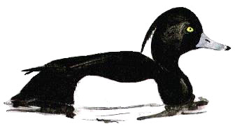

Tufted Duck
A common winter visitor to Chard reservoir & a rare breeder. Winter counts have declined in more recent years.

16/03/26 - "Many". Pair still present on 20/04 & a female on 04/06
1929 - "Winter visitor"
15/06/30 - Pair
20/03/32 - 15 birds
01/04/33 - Approx. 16 birds
30/01/35 - Maximum count of 30 birds. 2 pairs bred this year
12/02/36 - 6 birds
25/03/36 - Maximum count of 20 birds
06/04/38 - 2 or 3 pairs
27/03/39 - 20 birds
10/04/40 - 9 birds
21/04/41 - 6 birds
12/01/51 - Maximum count of 40 birds
04/12/55 - Maximum count of 35 birds
13/12/56 - Maximum count of 71 birds
03/01/57 - 61 birds
20/01/57 - Maximum count of 80 birds
13/12/59 - Maximum count of 125 birds. Record count to date
17/01/60 - Maximum count of 109 birds
. 1962 - "Fewer than normal"
10/07/66 - Female bird with 7 ducklings, having bred this year
17/11/66 - Maximum count of 30 birds
19/03/67 -15 birds
17/12/67 - Maximum count of 31 birds
1968 - 20 birds recorded
19/01/69 - 21 birds. Pair remained until at least 01/05
30/09/71 - Maximum count of 15 birds
1972 - 15 birds in March-April & September-December
10/05/72 - Single male
??/01/78 - 5 birds
??/02/78 - 15 birds
15 remained in March, rising to 17 in April
??/10/78 - 12 birds
??/11/78 - Maximum count of 36 birds
1979 - 20 birds in January-April period. Pair remaining in June
29/09/79 - 42 birds
13/10/79 - Maximum count of 51 birds. Decreasing to only 8 in November-December
??/12/79 - Single bird shot. Ringed as nestling in Lake Engure, Latvia (57.15N, 23.07W) in June of this year
15/03/81 - 26 birds
11/07/81 - Pair with young
09/08/81 - Maximum count of 60 birds
13/02/82 - Maximum count of 35 birds
??/04/83 - 50 birds
??/11/83 - Maximum count of 53 birds
??/02/84 - Maximum count of 31 birds
??/11/84 - 13 birds
17/02/85 - Maximum count of 98 birds
28/12/85 - 30 birds
??/02/86 - Maximum count of 60 birds
??/11/86 - 17 birds
1987 - Maximum count of 39, until 14/04
1987 - 11 birds from November, onwards
1988 - Brood recorded. No winter counts took place?
1989 - Brood recorded
23/07/89 - 32 birds. No winter counts took place?
??/03/90 - 8 birds
??/12/90 - Maximum count of 21 birds
??/02/91 - 25 birds
??/05/91 - Pair present but did not breed
??/12/91 - Maximum count of 53 birds
??/01/92 - Maximum count of 50 birds
??/12/92 - 9 birds
??/01/93 - 35 birds
??/12/93 - Maximum count of 42 birds
??/01/94 - Maximum count of 52 birds
??/12/94 - 46 birds
18/01/95 - Maximum count of 27 birds
01/05/95 - Pair
12/01/96 - Maximum count of 28 birds
27/12/96 - 19 birds
28/01/97 - 11 birds
31/10/97 - Maximum count of 21 birds
06/12/97 - 11 birds
10/01/98 - 15 birds
06/09/98 - 5 birds
05/10/98 - 7 birds, rising to 12 on 12/10
02/11/98 - 28 birds, rising to maximum count of 41 birds on 12/11
11/01/99 - 5 birds. 4 birds on 25/02, 5 on 06/03. Pair present on 26/03 & 26/04
12/06/99 - 3 males
28/09/99 - 12 birds
17/10/99 - Maximum count of 19 birds
19/11/99 - 16 birds
28/12/99 - 6 birds
2000 - Regularly seen throughout the year with max of 40 birds on 30/12 and 31/12
2001 - Recorded on 89 dates with max of 26 on 03/11
2002 - Recorded on 72 dates with max of 26 on 22/10 and 22/11. 3 pairs and some young seen in summer
2003 - Recorded on 74 dates with max of 20 on 10/11
2004 - Recorded on 72 dates with max of 28 on 01/11
2005 - Recorded on 37 dates with max of 18 on 18/04
2006 - Recorded on 59 dates with max of 23 on 16/02
2007 - Recorded on 34 dates with max of 23 on 03/04
2008 - Recorded on 46 dates with max of 16 on 09/10/08 and again on 15/10/08
2009 - Recorded on 100 dates with max of 20 on 27/09/09
2010 - Recorded on 145 dates with max 21 on 09/04 and 20/04
2011 - Recorded on 220 dates with max c.30 on 18/01
2012 - Recorded on 279 dates with max 36 on 27/07
2013 - Recorded on 256 dates with max 31 on 26/11
2014 - Recorded on 256 dates with max 26 on 17/11
2015 - Recorded on 238 dates with max 27 on 03/10
2016 - Recorded on 224 dates with max 44 on 18/01 and also 36 on 17/01 and 37 on 10/04
2017 - Recorded on 257 dates with max 35 on 05/11. 3 young were found on 08/07 which were already a few weeks old, but obviously hatched at the res. The first breeding since 1989.
2018 - Recorded on 179 dates with max 28 on 21/04
2019 - Recorded on 176 dates with max of 23 on 19/03
2020 - Recorded on 171 dates with max of 35 on 05/12. 5 young seen from 01/07 onwards into August
2021 - Recorded on 146 dates with max of 26 on 04/12
2022 - Recorded on 174 dates with max of 21 on 28/03
2023 - Recorded on 196 dates with max of 18 on 03/01
2024 - Recorded on 121 dates with max of 15 on 19/01, 18/11 and 24/12
2025 - Recorded on 179 dates with max of 26 on 04/01. Seen every month though only one bird through June/July/August